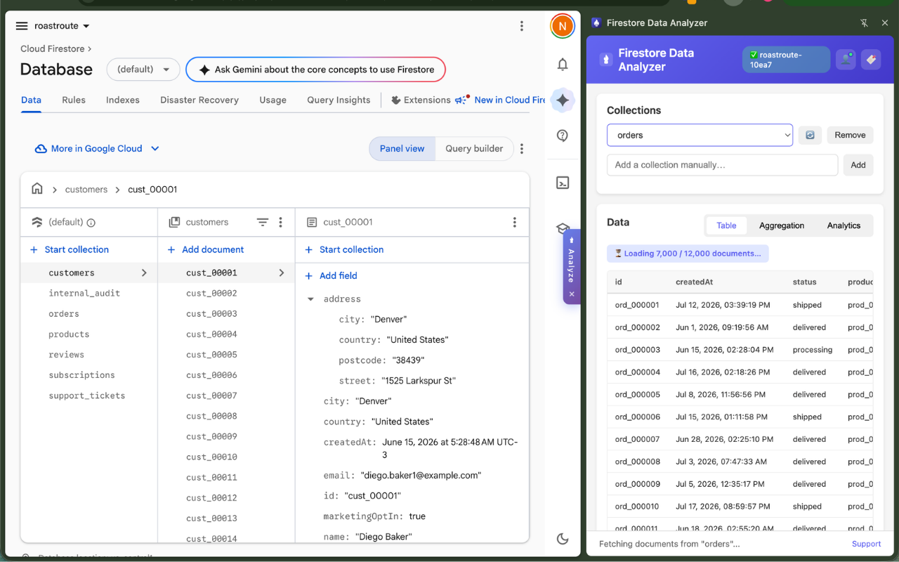

The Firebase console gives you a raw document browser. Firestore Data Analyzer gives you tables, aggregation, trend charts, and one-click export — in a Chrome side panel, connected directly to your own Firestore project.
Works with every Firebase plan, including the free Spark plan. No server, no admin keys — your data never leaves your browser.

Each feature is documented in the User Guide.
Browse your Firestore data in the Firebase console and the extension quietly learns your collection names — pick them from a dropdown, no typing.
How it works →Large collections stream in progressively — first rows appear in under a second, with a live "Loaded N / M" progress count and infinite scroll.
Table view →Tick the fields you care about and get instant group-by counts with bar charts. Results recompute live as you change fields.
Aggregation →Date fields are auto-detected and charted — see records per day at a glance, switch chart types with one click, and focus with a Top N picker.
Analytics →Download whole collections in the format your workflow needs — full-fidelity JSON, spreadsheet-ready CSV, or Excel.
Export →Hit "permission denied"? The extension generates a safe, read-only, UID-scoped rule for the exact collection you tried — copy, paste, retry.
Rules helper →The full walkthrough lives in Getting Started.
Add Firestore Data Analyzer to Chrome from the Chrome Web Store.
Open your project in the Firebase console. A small banner guides you to your project's Settings page, where the extension picks up the connection details by itself — nothing to copy or paste.
Click the toolbar icon or the floating Analyze handle, then sign in with an email/password account from your own project's Firebase Authentication.
Pick a collection from the dropdown and explore: table, aggregation, charts, export.
Data flows directly between your browser and your own Firebase project. The extension has no servers and no tracking — nothing you do in it is sent anywhere, and it talks to nothing except Firebase itself. Read the privacy policy.